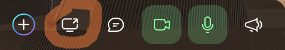
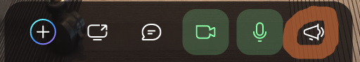

Dear presenters, We are excited to see you for the conference this Friday through Sunday. The website and program are live at netsciecon.org. This email contains important instructions for using the virtual conference space, as well as links and passwords for accessing the platform. THE MOST IMPORTANT THING IS THAT YOU TAKE A FEW MINUTES TO VISIT THE SPACE ON THURSDAY AND TEST OUT HOW TO PRESENT. The entire conference will happen at https://spatial.chat/s/NetSciEcon6. The space is open for you now. The password is included in the email sent to presenters. Most important points: To attend the conference, you MUST access the conference through Google Chrome.
Other browsers cause serious unexpected problems, especially when presenting!
Once logged in, zoom in and out by using your mouse's scroll feature. Pan by clicking and dragging. Then explore! To give a talk, the strongly recommended setup is to have a second monitor so that you can see your presentation in full-screen mode on one monitor, and also the audience and the room (what others see) on the other monitor. Simply click the icon below and choose to share the entire presentation screen.

- If you are a Mac user, You may need to give permission for screen sharing first. Otherwise your screen will not share. You can follow the instructions here.
IMPORTANT When your presentation begins, enable Megaphone Mode to speak to the entire room. Otherwise, most of the room will not be able to hear you.

If you use only one monitor, the best solution is to load your talk in a PDF viewer without maximizing it, so you can see the room (what others see) and your talk. Then after you click Share Screen, share just your PDF viewer app window.
Whenever you need help, find people with yellow badges. These conference staff members will help you with whatever you need.
You can refer to this PDF file for more detailed facts about the platform and conference. A video walkthrough for logging in is here if you need it. Please let us know if you have any questions! We are looking forward to seeing you at the conference!
Once again, all speakers should visit the conference space at https://spatial.chat/s/NetSciEcon6 and play around with it well before the time of your talk. It is open now. Try to share your screen and present in any seminar room. (You can check how it looks to someone else by opening the same space in a different Chrome tab or a different computer.)
Best wishes,
The Organizers